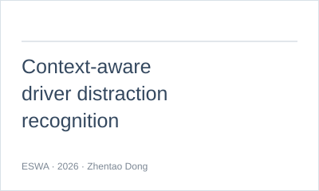
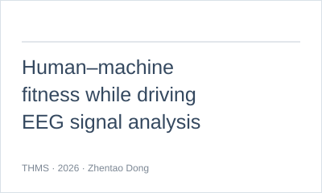

Working Experience and Education: I am a Ph.D. student in Control Science and Engineering in the integrated Master–Ph.D. program at Beijing Jiaotong University (BJTU). I am currently a visiting Ph.D. student at the University of Birmingham, United Kingdom, on a one-year joint-training program supported by the China Scholarship Council (CSC). I received my Bachelor's degree in Transportation Engineering from Chang'an University in 2023.
Research Interests: Brain–computer interfaces and intelligent transportation, including:
● Brain–Computer Interfaces
● Human–Vehicle Interaction
● AI in Transportation
● Automated Vehicles
My research uses EEG and multimodal physiological signals to investigate driver states, driving behavior, and human acceptance of automated vehicles. For research discussions and collaboration, please contact ztdong@bjtu.edu.cn or zhentao.dong@outlook.com.
📖 Education
Visiting Ph.D. Student · One-year joint-training program
Supported by the China Scholarship Council (CSC)
Oct. 2026 – Oct. 2027
🔬 Research Experience & Collaboration
Fundamental Research Funds for the Central Universities
2026–2028
- Principal Investigator · Funding: RMB 30,000
Research collaboration with Neuracle
2024–2026
- Neuracle Open Research Project on Cognitive EEG and Transcranial Electrical Stimulation.
- Collaboration involving the NeuroHUB multimodal signal acquisition system, configured with 64-channel EEG, 64-channel high-density EMG, and a physiological polygraph module.
On-road driving experiment & multimodal dataset
- Designed and conducted a real-vehicle car-following experiment involving 43 drivers, covering manual driving and automated assistance.
- Collected multimodal physiological and behavioral data, including EEG, EMG, ECG, PPG, eye tracking, video, and driving records.
- Carried out data processing, dataset preparation, and driving behavior prediction modeling.
🔥 News
- 2026: A paper on context-aware driver distraction recognition published in Expert Systems with Applications.
- 2026: A paper on human acceptance of autonomous driving styles published in IEEE Transactions on Human-Machine Systems.
- 2026: A coauthored paper on logistics facility relocation published in Transportation Research Part E.
- 2025: A paper on multimodal emotional features published in Journal of Zhejiang University (Engineering Science).
- 2024: Started Ph.D. studies in Control Science and Engineering at Beijing Jiaotong University.
📝 Selected Publications
† denotes corresponding author

- Adaptive driver distraction recognition in mixed manual–automated on-road driving via a context-aware framework. (Expert Systems with Applications, 2026)
- [paper]

- Human–machine fitness while driving: Evaluating human acceptance of autonomous driving styles through EEG signal analysis. (IEEE Transactions on Human-Machine Systems, 2026)
- [paper]
- Multimodal emotional feature analysis based on short video resources of traffic incidents. (Journal of Zhejiang University (Engineering Science), 2025)
- [paper]
📚 Full Publication List
📖 Complete Publications
🎯 2026
- Dong, Z., Qi, G.†, Hao, Y., Zheng, S.-T., Jiang, R., Guan, W.†, Adaptive driver distraction recognition in mixed manual–automated on-road driving via a context-aware framework. Expert Systems with Applications, 330, 133093, 2026.
- Qi, G., Dong, Z.†, Guan, W.†, Huang, A., An, Y., Human–machine fitness while driving: Evaluating human acceptance of autonomous driving styles through EEG signal analysis. IEEE Transactions on Human-Machine Systems, 56(3), 636–649, 2026.
- Tang, X., Wei, Z., Liu, Z., Dong, Z., Huang, H., Li, B.†, Spatial relocation of logistics facilities in Beijing, China: Decoupling the influencing factors and unveiling the role of policy. Transportation Research Part E: Logistics and Transportation Review, 212, 104961, 2026.
🎯 2025
- Dong, Z., Xu, K., Wan, Q., Liu, X., Shen, H., Li, S., Qi, G.†, Multimodal emotional feature analysis based on short video resources of traffic incidents. Journal of Zhejiang University (Engineering Science), 59(4), 661–668, 2025 [In Chinese].
🎯 2024
- Dong, Z., Qi, G., Guan, W., Shang, S., EEG feature mining and analysis for driving behavior tracing. Proceedings of the 2024 World Transport Convention, 346–353, 2024 [In Chinese].
Under Review
- From Coarse Distraction Detection to Mode-Aware Driver-State Recognition: Multimodal Physiological Evidence from Real-World Manual and Automated Driving
- EASTF-Net: EEG-Anchored Spectral–Temporal Fusion for Driver-State Recognition Across Manual and Automated Driving
- Toward Reliable Car-Following Behavior Prediction: EEG-Enhanced Uncertainty Quantification
🏅 Honors and Awards
- 2026: 🏅 Merit Graduate Student, Beijing Jiaotong University
- 2023: 🏅 Outstanding Graduate, Chang'an University
- 2023: 🏅 Excellent Thesis, Chang'an University
- 2020: 🏅 National Scholarship, Ministry of Education, China
💻 Internships
Autonomous Driving Algorithm Intern